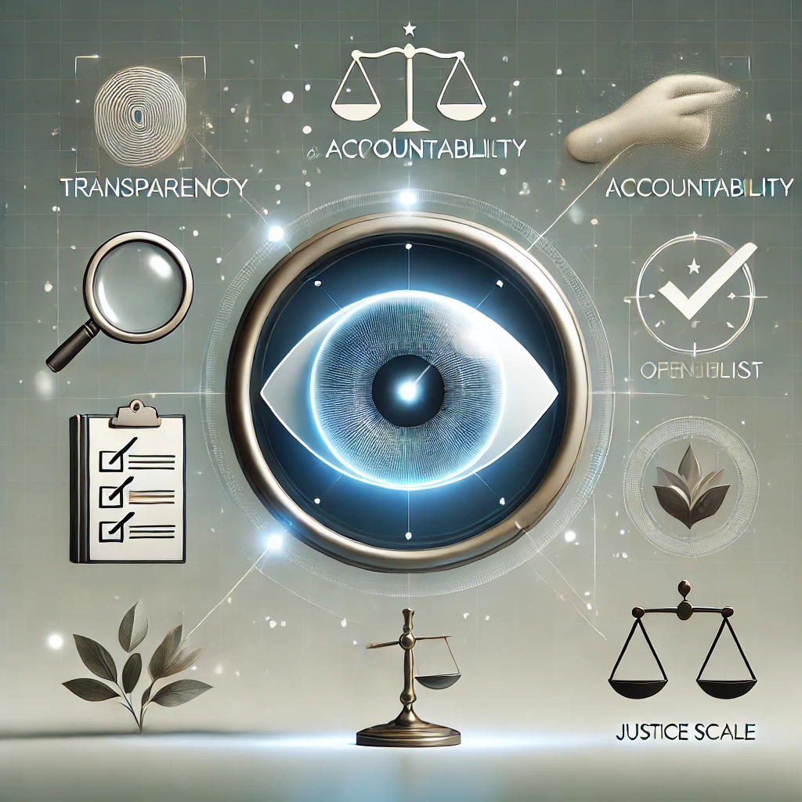

The age of AI has already shifted from science fiction to ubiquitous reality that is revolutionizing our daily lives. But that is just the beginning of technology it is ever-evolving and changing. From intelligent personal assistants like Siri and Alexa to sophisticated algorithms in medicine, finance, and marketing, AI is revolutionizing sectors at a rate never experienced before in the history of human existence. But, as with all new technology, it is a good idea to keep things in perspective and ask some very difficult questions before we get too caught up. As AI becomes more integrated into society, issues of privacy, bias, and responsibility need to be addressed. Are there dangers? More importantly, can AI be ethical?
For this piece, we'll delve into the largest ethical concerns in AI, looking very deeply into underlying principles and questions as we talk about actual case studies and international regulations that will determine the future of AI.
Overview of Artificial Intelligence
At its simplest, Artificial Intelligence is a computer that mimics human intelligence. AI is applied to define a broad range of technologies such as Machine Learning (ML), Natural Language Processing (NLP), and robots. They are experience-based adaptive systems that adapt and use their adaptation to apply to new inputs in a bid to execute tasks that demand human thinking such as decision-making, problem-solving, and speech recognition.
AI is already quite competent at several things, ranging from healthcare and banking, to marketing and security. With its heavier and heavier penetration into the everyday from applicant screening to autonomous vehicles its impact on human safety, privacy, and health is increasingly all-encompassing. AI models are highly data-dependent in operation and the nature of the data decides the success or failure of the decisions that are made by them.
Ethical Impacts of AI
1. Bias and Fairness
Artificial intelligence systems learn by experience in the information they are given, just like humans do. If information is biased or unequal preferences or biasesthen the AI will learn the biases. For example, if an AI is trained on data that is largely representative of one gender or one type of person, it may make decisions in favor of that type.
Take the case of Amazon's AI hiring tool: it was meant to help make hiring decisions on job applicants. But because training data were largely male applicants, the tool started discriminating against men in favor of women. It is like a teacher creating examples based on one set of students alone, which can lead to discrimination against students from another set.
As part of an effort to make AI more fair, one needs to:
- Use reasonably representative figures for all.
- Occasionally check the conclusions of the AI to ensure it is not perpetuating or adding to any bias.
- Re-run or re-tune the model in case any biases are found.
Briefly, if our examples we are learning from are biased or unjust, then so can be our decisions. To make AI just is only to make sure that data encompasses the whole scope of the world and that we listen very, very attentively so we can make up for any unjust practice.
2. Data Privacy and Security
AI applications consume massive amounts of data in order to function effectively. But all that use of personal information has a privacy cost. Personal information is collected by businesses in order to improve and personalize their services, but if it is not secured, it can be abused or even be hacked into.
For instance, the Cambridge Analytica-Facebook scandal revealed how the data analysis done by AI was being manipulated. There, private data of millions of users were being used to micro-target the voters with personalized political ads that were capable of deciding the election outcomes.
Such concerns are resolved through the enactment of laws like the General Data Protection Regulation (GDPR), whose objective is the protection of the data of people. GDPR offers organizations direction on how to process data and accord people ownership of their data. Its adoption in the entire world through laws of different countries and the maintenance of pace with the fast rate at which technology advances is challenging.
In brief, AI needs data but there have to be strong privacy controls to avoid misuse, safeguard individuals, and give confidence in technology.
3. Transparency and Accountability
Most AI systems, including deep learning systems, are "black boxes" — they are difficult to understand how they work. It is a huge problem if conclusions made by an AI have life-changing effect on people. For instance, if a mistaken loan rejection or a medical diagnosis error was carried out by an AI system, nobody knows who is responsible: the developers, the company that is using the AI, or somebody else.
The Google scandal, where the leading ethical AI researchers were let go, is a prime example of how hard it is to be held accountable. If nobody really knows algorithms making decisions, it is hard to fault anyone when something goes awry.
To address this challenge, developers of the AI must design such systems to be transparent so the decision-making process can be explained and audited. Transparency will ensure there is clear accountability and bugs are fixed.
4. Autonomy and Human Control
AI is able to do routine things flawlessly, but the fact that major decisions should be made completely under its control is a significant ethical problem. Autonomous vehicles or combat robots, for instance, if there's something amiss, it can have cataclysmic, even life-altering, consequences. Similarly, AI-based decision support for diagnostics in medicine can be very useful, but a mistake would lead to the wrong treatments or unmasked illnesses.
Because of these risks, human and machine intervention must be balanced. Humans bring moral judgment, empathy, and the capacity to consider context that current AI technologies cannot. A human "in the loop" gives the guarantee that the AI can perform the drudgery or computationally intensive tasks and that final decision-making on the high-risk portions is verified and authorized by humans with the capability to consider the larger picture.
5. Economic Impact and Displacement of Jobs
Because AI is doing repetitive work, it is correct to say that certain jobs will be made redundant, and this will lead to enormous disruption to the workforce. Because AI also generates new industries and jobs, there is a powerful ethical imperative to act in the best interests of workers whose employment is disrupted by change.
Governments and businesses must invest in reskilling and upskilling programs that enable one to switch to other professions. That future focus benefits the people by giving them access to new opportunities but makes AI benefits inclusive in the sense that large segments of society are not left behind.
6. AI for Social Good
Though AI raises some ethical issues, it also has an enormous potential to positively impact society. AI, for example, allows for the prediction of natural disasters from the patterns of the weather to ready and save lives for emergency services. AI facilitates mobility for disabled individuals by fueling innovation in the such as voice recognition and intelligent assistive technology. AI models also reduce global warming through minimizing the consumption of energy and saving waste.
The solution is in having the capacity to develop and deploy AI in a way that as many of the above advantages as possible with as little harm and as much solving with maximum rigor.
Challenges in AI Application
1. No regulation
Artificial intelligence is developing so quickly that law and regulation cannot catch up. The rest of the world attempts to develop its own regulation, such as the AI Act of the European Union providing for assured ethical use and safeguards, and the more draconian AI surveillance policies of China. None of these, though, has a universal set that all adhere to. A global standard of ethics would allow AI to benefit all and shut down misuse but something not easy to initiate.
2. Deepfakes and Disinformation
Deepfake technology is the process of using artificial intelligence to produce very realistic but completely fake videos. Because the videos are very realistic, deepfakes ensure that you are unable to ascertain whether what you're watching is real or not. That's a problem because deepfakes can be used to spread misinformation, influence public opinion with political misinformation, or swindle you by posing as another person.
3. Cyber Threats
AI systems are also susceptible to cyberattacks as any other technology. The attackers may use vulnerabilities in an AI model to gain unauthorized access, steal information, or even utilize the system to launch attacks. It is therefore essential to implement AI security such as strong encryption, regular vulnerability scanning, and software patches to combat such attacks.
4. Ethical Use in Healthcare
AI is transforming medicine by helping doctors diagnose disease, prescribe medication, and even discover new drugs. But issues arise when AI programs crash, particularly when a crash can be fatal. Some of the ethical issues to consider:
- Patient Privacy: AI systems require huge amounts of patient data, which must be properly secured.
- Accuracy: Diagnostic or treatment errors can lead to disastrous consequences.
- Human Oversight: In spite of the newest AI, human oversight by medical doctors is required.
5. Environmental Impact

Large language models like ChatGPT require massive quantities of computer processing, and that requires massive quantities of energy. Energy consumption equates to lots of carbon emissions, especially if the energy used is fossil fuel. The larger the AI, the more significant the environmental element.
Scientists and engineers are attempting to lower the energy needs of AI by more efficient computation, improved hardware, and renewable energy sources for data centers.
6. AI in Workplace Ethics and Recruitment
AI job boards try to accelerate and make the process easier. But if biased data are used to train them, they slightly prefer some groups of people over others. For example, Amazon's hiring tool was biased in favor of men compared to women. That's why there must be openness about how corporations are using AI-based hiring software and periodic tests for fairness.
7. Ethical AI Frameworks & International Regulations
Governments and institutions are establishing ethical AI standards to guide ethical development. They are:
- European Union's AI Act: In order to regulate high-risk AI systems through hard laws so that they can not harm humans.
- China's Laws on AI Surveillance: For purposes of maintaining state control and surveillance for social order and security.
- IEEE and UNESCO Guidelines: Embed fairness, transparency, and responsibility in AI development.
Even though every framework is beneficial and has protection, there must be international cooperation to formulate international ethical standards that are applied globally.
Conclusion
AI is a great technology that has the ability to make life richer and revolutionize businesses. But in developing and implementing AI, we must do it responsibly. These are some of the key takeaways:
- Transparency: People should be able to understand how AI systems are deciding something so that they can build trust and catch issues early.
- Fairness: AI should be fair to everyone by applying unbiased data and observing its actions.
- Privacy Protection: Personal information must be safeguarded to avoid data abuse and leakage.
- Regulatory Frameworks: The law and regulations help to ensure that AI is used ethically, preventing harm but encouraging innovation.
Balance between responsibility and innovation is ensuring continuous enhancement of AI in a way that safeguards society. The future of AI depends on responsible innovation, judicious use, and good regulation.
What are your views on AI ethics and issues? Let me know in the comments below!
References
- Dastin, J. (2018, October 10). Amazon scraps secret AI recruiting tool that showed bias against women. Reuters.
- Rosenberg, M., Confessore, N., & Cadwalladr, C. (2018, March 17). How Trump Consultants Exploited the Facebook Data of Millions. The New York Times.
- GDPR.eu. (2016). General Data Protection Regulation.
- European Commission. (2021). Proposal for a Regulation laying down harmonised rules on Artificial Intelligence (Artificial Intelligence Act).
- Creemers, R. (2018). China’s Social Credit System: An Evolving Practice of Control. SSRN Electronic Journal.
- IEEE. (2019). Ethically Aligned Design: A Vision for Prioritizing Human Well-being with Autonomous and Intelligent Systems.
- UNESCO. (2021). Recommendation on the Ethics of Artificial Intelligence.
- Chesney, R., & Citron, D. K. (2019). Deep Fakes: A Looming Challenge for Privacy, Democracy, and National Security. California Law Review, 107(6), 1753–1820.